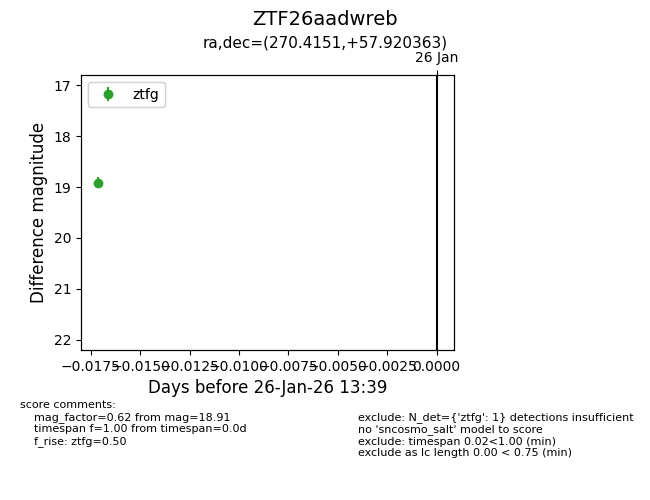
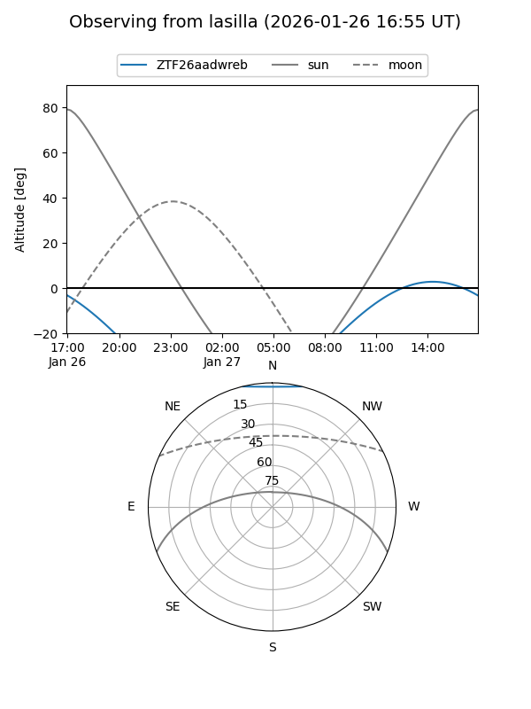
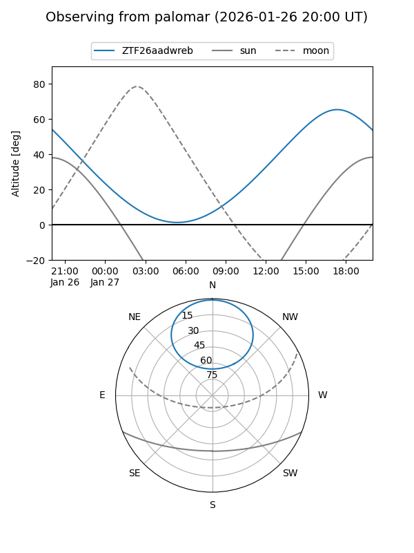

ZTF26aadwreb
Target ZTF26aadwreb at 2026-01-26 13:41
Aliases and brokers:
FINK: link
Lasair: link
ALeRCE: link
alt names
ZTF26aadwreb (ztf,fink_ztf)
Coordinates:
equatorial (ra, dec) = 270.4151,+57.92036
equatorial (HMS+DMS) = 18:01:39.62,+57:55:13.31
galactic (l, b) = (86.4724,+29.22344)
Flags:
Photometry:
last ztfg=18.91
1 ztfg detections
Lightcurve

Visibility


Additional plots